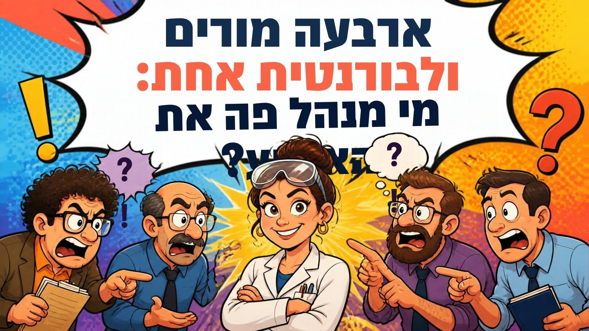
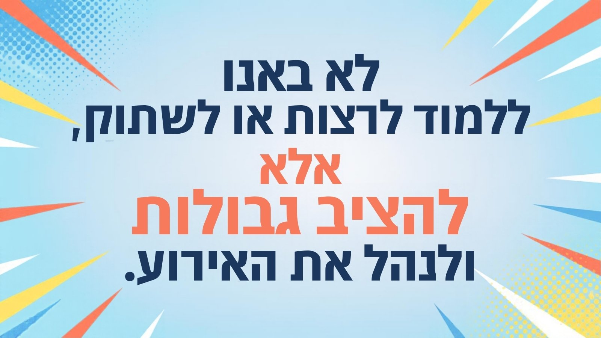
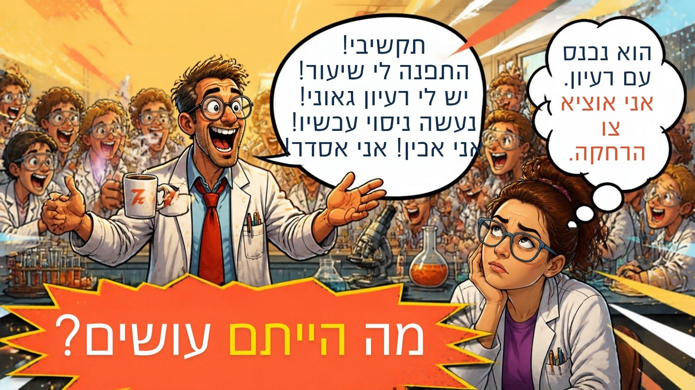
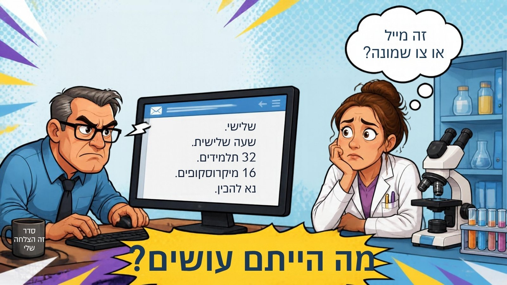
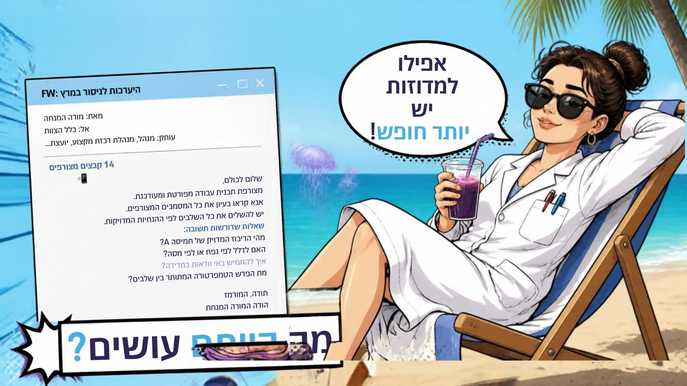
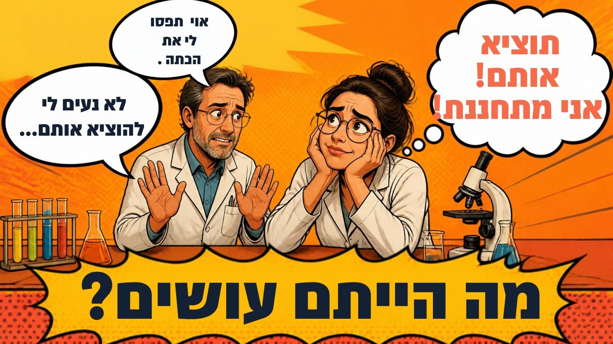
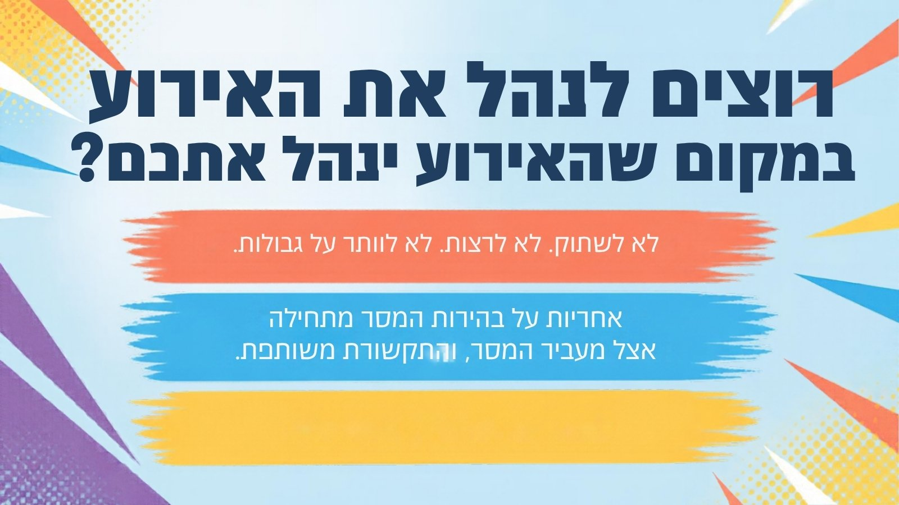

שלושה כללים לסדנה
כמו פיפטה שלא שוטפה. אף אחד לא רוצה לדעת מה היה בה.
גם אם כולם בחדר יודעים בדיוק על מי מדובר.
יש רק סגנון שעוד לא הבנו איך לדבר איתו.
נחתתם במדינה זרה
לא מכירים את השפה. מנסים להזמין קפה ומקבלים מרק. מבקשים כיוון לתחנה ומגיעים לחתונה של זרים. ואז מישהו מלמד אתכם שלוש מילים בשפה המקומית, ופתאום הכול נפתח.
במעבדה מדברים ארבע שפות. היום לומדים כמה מילים בכל אחת.
מה זו תקשורת?
לא קו ישר. יותר כמו פינג־פונג עם רעשי רקע.
רעשים מבחוץ
- צלצול, 32 תלמידים ומדיח שעובד
- וואטסאפ ב-07:42, בין קפה לקפה
- לחץ זמן: "צריך את זה עכשיו"
רעשים מבפנים
- עייפות, רגש, מצב רוח
- אמונות: "שוב מתייחסים אליי כמו לספקית"
- ניסיון קודם עם אותו מורה
אז מה היה שם?
- היא רצתה שיקשיבו לה. הוא רצה לתקן.
- מי צודק?
- ועל מי האחריות שהמסר יעבור?
שני סוגים של תקשורת טובה
תקשורת שמשיגה את התוצאה.
במעבדה: המבחנות מוכנות, בזמן, בריכוז הנכון.
המסר עובר בבהירות לשני הצדדים.
במעבדה: וגם אף אחד לא יצא מהשיחה עם כאב בטן.
את המורה אי אפשר לשנות. את הדרך שבה אני מגיבה, אפשר.
ואיזו שפה אתם מדברים?
- סורקים את הקוד בטלפון.
- עונים על השאלון הקצר. בוחרים מה מתאר אתכם יותר, בלי לחשוב יותר מדי.
- מסמנים את הנקודה על המפה, ושומרים את התוצאה בטלפון.
זו לא אנליזה פסיכולוגית. זה כלי להבין איך אנחנו מתקשרים.
שני צירים, ארבעה סגנונות
למעלה–למטה: בלתי רשמי מול רשמי.
שמאל–ימין: דומיננטי מול פסיבי.
הנקודה מראה לאן אנחנו נוטים, לא מי אנחנו. בכל אחד יש קצת מכל ריבוע.
כל סגנון לפינה שלו
משימתיים,
מי אתם?
ממוקדי תוצאה, החלטיים ופועלים מהר. עוזרים לכולם לתעדף ולהגיע לשורה התחתונה.
שורה תחתונה · יעילות · קצר ולעניין · עלות מול תועלת · תקתוק · יעדים
איך מזהים
משפטים קצרים, מבט לשעון, עמדה חזקה. "תכלס?"
מעריכים כש…
יש תוצאות, עומדים בזמנים ונותנים להם אחריות.
חוששים מ…
בזבוז זמן, וניסיון להחליט במקומם.
החוזקה במעבדה
סוגרים משימות, בוחרים בין חלופות ומזיזים דברים.
בלחץ
נעשים קצרים וחדים עוד יותר. קצרנות אינה זלזול, וגם אינה היתר לדרישה כוחנית.
נקודת צמיחה
סבלנות לתהליך ושיתוף פעולה עם אחרים.
איך מדברים עם משימתי?
✔ עשו
- שורה תחתונה
- קצב מהיר
- מה יוצא לו מזה
- מה המשימה הבאה
✖ אל תעשו
- איחורים
- חוסר דיוק
- פירוט יתר
- סטייה מהעניין
טיפ ללבורנט/ית: לענות קצר: מה מוכן, מה חסר, מה הפתרון.
גורמים לו להרגיש: סמכותי ומוביל
ככה הוא שולח לכם הודעה:
(זה לא כעס. זו פשוט הודעה שלמה מבחינתו.)
ומה עונים במעבדה?
מקדמים,
מי אתם?
מעלים רעיונות, משדרים התלהבות ומניעים אחרים. איתם אף פעם לא משעמם, ולפעמים גם לא מסודר.
כריזמטי · מלהיב · יצירתי · ספונטני · רעיונות חדשים · כיף · פרצי אנרגיה
איך מזהים
מדברים מהר, עם סיפורים, דוגמאות ואימוג'ים, וכבר קופצים לרעיון הבא.
מעריכים כש…
מכירים בהם, מפרגנים ומתלהבים איתם.
חוששים מ…
שעמום, דחייה, ויותר מדי עובדות ופרטים.
החוזקה במעבדה
יוזמה, ניסויים חדשים וגיוס אנשים.
בלחץ
מדברים עוד יותר, ולפעמים מבטיחים יותר ממה שאפשר.
נקודת צמיחה
תכנון הביצוע ועמידה ביעדים עד הסוף.
איך מדברים עם מקדם?
✔ עשו
- מחמאות
- לזרום עם הרעיון
- משימות קצרות
- לגוון
✖ אל תעשו
- ביקורת
- הפעלת סמכות
- לשעמם
- פרטי פרטים
טיפ ללבורנט/ית: לפרגן לרעיון, ואז לסגור בקצרה מה צריך ומתי אפשר. בטיחות קודמת להתלהבות.
גורמים לו להרגיש: יחיד ומיוחד
ככה הוא שולח לכם הודעה:
(שאלתם "כמה תלמידים?" והוא כבר בניסוי הבא.)
ומה עונים במעבדה?
מנתחים,
מי אתם?
מבקשים פרטים ומעדיפים דיוק. חושבים לפני שמדברים, ומחליטים רק כשהנתונים על השולחן.
חשיבה לוגית · דייקנות · יסודיות · איסוף נתונים · סדר וארגון · שיטתיות
איך מזהים
הרבה שאלות, קבצים מצורפים, "לפי נפח או לפי מסה?"
מעריכים כש…
מקבלים מידע מלא, מראש, ויש זמן לחשוב.
חוששים מ…
טעויות, חוסר ודאות ושינויים ברגע האחרון.
החוזקה במעבדה
פרוטוקולים, איכות, מלאי ובטיחות. לפעמים מזהים את הטעות שכולם פספסו.
בלחץ
נסוגים לפרטים ומתעכבים בהחלטה. הם לא "איטיים" ולא "חסרי רגש".
נקודת צמיחה
תקשורת בין־אישית, והחלטה גם כשלא כל הנתונים בידיים.
איך מדברים עם מנתח?
✔ עשו
- לפרט
- לעדכן מראש על כל שינוי
- להקשיב עד הסוף
- להזמין שאלות
✖ אל תעשו
- "בערך"
- קפיצה בין נושאים
- הפתעות
- "סמוך עליי, יהיה בסדר"
טיפ ללבורנט/ית: רשימת ציוד מסודרת, פרוטוקול כתוב, ושינויים רק עם התראה מראש.
גורמים לו להרגיש: בעל הידע ופותר הבעיות
ככה הוא שולח לכם הודעה:
(ואם עניתם "בערך 2 גרם", הוא כבר לא ישן בלילה.)
ומה עונים במעבדה?
תומכים,
מי אתם?
קשובים, משתפים פעולה ויוצרים ביטחון. חשוב להם לעזור, ושיהיה טוב לכולם.
סבלנות · הקשבה · פרגון · הרמוניה · עבודת צוות · דאגה לאחר · חום
איך מזהים
מבקשים בעקיפין, מתנצלים, "רק אם נוח לך", ומתקשים לומר "לא".
מעריכים כש…
דואגים להם, תומכים בהם ועובדים יחד.
חוששים מ…
עימות, דחייה, ושלא ידאגו להם.
החוזקה במעבדה
ליווי, תיאום, קליטת עובדים חדשים ושיחות רגישות.
בלחץ
נסגרים ושותקים. שקט אינו בהכרח הסכמה.
נקודת צמיחה
אסרטיביות, גבולות ועצמאות.
איך מדברים עם תומך?
✔ עשו
- יחס חם
- לעבוד יחד
- לעודד
- להראות אכפתיות
✖ אל תעשו
- לעמת
- להתעלם
- להפתיע
- סימני קריאה!!!
טיפ ללבורנט/ית: לשאול בחום מה בדיוק צריך, ולהציע להכין יחד. בלי תשובות חדות בוואטסאפ.
גורמים לו להרגיש: מוערך ומחובר
ככה הוא שולח לכם הודעה:
(מה הוא צריך? מעבדה מלאה. הוא פשוט לא יגיד את זה.)
ומה עונים במעבדה?
ארבע שפות, משפט אחד לכל אחת
"שורה תחתונה: מוכן בשלישי לפני השעה השלישית."
"רעיון מעולה! נבנה אותו יחד."
"הכול בקובץ אחד, לפי הסדר."
"אני איתך. נקבע יחד."
אין סגנון טוב או רע. החלפת סגנון אינה כניעה: גבולות ובטיחות נשארים.
איזה סגנון יש לכל דמות בישיבה?
ואיך כל סגנון היה עונה למומחה?
"כמה זמן זה ייקח וכמה זה עולה? תעשה ותעדכן."
"קווים ירוקים־אדומים! ואם אחד מהם יהיה בצורת חתול?"
"רגע. קו אדום בדיו ירוקה? אפשר לנסח את הדרישה מחדש?"
"אני בטוח שנמצא פתרון שכולם יהיו מרוצים ממנו. אולי נשב יחד?"
הפסקה
15 דקות. משימתיים: 15. מקדמים: בערך 15. מנתחים: 15:00 דקות, לא 14:59. תומכים: יחכו שכולם יחזרו.
מי שלח את זה?
איך מזהים: החלטי/ת, ישיר/ה, קצר/ה. אוהב/ת להוביל.
עשו
- שורה תחתונה
- קצב מהיר
- מה יוצא לו מזה
- מה המשימה הבאה
אל תעשו
- איחורים
- חוסר דיוק
- פירוט יתר
- סטייה מהעניין
גורמים לו להרגיש: סמכותי ומוביל
מי שלח את זה?
איך מזהים: נלהב/ת, מדבר/ת מהר, עם סיפורים, דוגמאות וסימני קריאה.
עשו
- מחמאות
- לזרום עם הרעיון
- משימות קצרות
- לגוון
אל תעשו
- ביקורת
- הפעלת סמכות
- לשעמם
- פרטי פרטים
גורמים לו להרגיש: יחיד ומיוחד · ובטיחות? קודם כול, גם כשמתלהבים.
מי שלח את זה?
איך מזהים: שואל/ת הרבה שאלות, מבקש/ת פרטים מראש, נזהר/ת מטעויות.
עשו
- לפרט
- לעדכן מראש על כל שינוי
- להקשיב עד הסוף
אל תעשו
- "בערך"
- קפיצה בין נושאים
- הפתעות
גורמים לו להרגיש: בעל הידע ופותר הבעיות
מי שלח את זה?
איך מזהים: חם/ה וקשוב/ה, מבקש/ת בעקיפין, מתקשה לומר "לא". שקט אינו בהכרח הסכמה.
עשו
- יחס חם
- לעבוד יחד
- לעודד
- אכפתיות
אל תעשו
- לעמת
- להתעלם
- להפתיע
- סימני קריאה!!!
גורמים לו להרגיש: מוערך ומחובר
במי תבחרו? ומה הסגנון שלו?
"פחות ישיבות. יותר מבחנות. מצביעים וזזים."
משימתי"איתי כל יום במעבדה יהיה חגיגה!!! ויהיה גם מקרר חדש 🎉"
מקדם"תוכנית עבודה בת 47 סעיפים, כולל נספחים. פרק 3: מגבות נייר."
מנתח"אני כאן בשביל כולכם. אם תרצו. רק אם נוח לכם 💛"
תומךע.ז.ת: לפני שעונים
נשימה אחת לפני תגובה. בוואטסאפ: עשר דקות.
איזה סגנון? מה הצורך של המורה?
קצר / מפורט / מפרגן / חם, לפי הסגנון.
ומשפט הרתימה:
"…אני צריכה עד ."
אותו סיפור. סגנונות אחרים.
מקריא/ה את הדמות הראשונה בתסריט.
מקריא/ה את הדמות השנייה.
כותב/ת: איזה סגנון יש לכל דמות, ואיזה משפט הצית את הפיצוץ.
וזה תמיד נגמר בפיצוץ 💥
זוג מתנדבים עולה לבמה
החלפת סגנון אינה כניעה. גבולות ובטיחות נשארים.
גם באותה שפה זה מתפוצץ
מרוץ. כל אחד סופר, אף אחד לא מקשיב.
מסיבה. 80 מגשים, אפס מדבקות.
ויכוח על סעיף 4. הבוחן כבר בפנים.
"סליחה." "לא, את סליחה." ואף אחד לא אמר מה חסר.
לדבר באותה שפה זה לא מספיק. צריך לדעת איך אנחנו נעים, ולעצור לפני שזה מתנגש.
מול הסגנון המנוגד צריך הכי הרבה תרגום
מהירות ותוצאה מול קשר וביטחון.
המשימתי שומע "חפירה". התומך שומע "קרירות".
רעיון והתלהבות מול פרטים ודיוק.
המקדם שומע "ביקורת". המנתח שומע "בערך".
ההפך שלכם הוא גם המשלים שלכם. ביחד, המעבדה עובדת.
האיש האדום? האיש הצהוב?
מודל הצבעים מהספר "מוקף באידיוטים" (תומאס אריקסון) קרוב לארבעת הסגנונות שלנו.
קרוב, לא זהה. "מוקף באידיוטים" הוא ספר פופולרי, לא מחקר. והצבעים במצגת? לא במקרה 😉
דף לכל סגנון, בשפה שלו
השורה התחתונה. 40 שניות קריאה.
סיפור, פתקים צבעוניים ואתגר.
טבלת מודלים, מקורות והערות שוליים.
מכתב אישי וחם.
מכתב קטן לעצמי ✉️
אדם אחד שאני עובד/ת איתו:
הסגנון שלו כנראה:
מחר אעשה אחרת:
את המורה אי אפשר לשנות. את הדרך שבה אני מגיבה, אפשר.
תודה שהייתם איתי היום 💛
הכול על הסגנון שלכם, עם תרגול
כלי קטן לספור הצלחות אחרת
hagit2303.github.io/sadnat-laborantim